RECEIVE-KILL-1.1 — compressed Ball Control + follow-up control
Live episode matrix ↗ · Live episode lab ↗ (local server :8361) · Report · Episode animation contract · All old-vs-new tables · RECEIVE-KILL-1 (old scale)
1 · The compressed scale
OLD E = 0.0068 + 0.4 · u^1.1 · D/(D + 1) u = (100 − BC)/90 NEW E = 0.0068 + 0.25 · u·(0.68 + 0.32·u²) · D/(D + 1) σ_axis = k_axis · 10 m/s · D · E (chest / head k reduced 15–20 %)
Old vs new — the benchmarks (median distance from the intended point 2.0 s after the first touch, the same seeds and draws)
| BENCH | BC 10 | BC 20 | BC 30 | BC 40 | BC 50 | BC 60 | BC 70 | BC 80 | BC 90 | BC 99 | |
|---|---|---|---|---|---|---|---|---|---|---|---|
| EASY FOOT_INSIDE_R | old 2 s | 0.03 | 0.02 | 0.02 | 0.02 | 0.01 | 0.01 | 0.01 | 0.01 | 0.00 | 0.00 |
| new 2 s | 0.02 −35% | 0.01 −39% | 0.01 −42% | 0.01 −44% | 0.01 −44% | 0.01 −44% | 0.01 −40% | 0.00 −32% | 0.00 −23% | 0.00 | |
| HARD FOOT_INSIDE_R | old 2 s | 5.71 | 4.62 | 3.52 | 2.63 | 1.80 | 1.16 | 0.68 | 0.33 | 0.12 | 0.03 |
| new 2 s | 2.46 −57% | 1.77 −62% | 1.26 −64% | 0.87 −67% | 0.57 −69% | 0.37 −68% | 0.23 −66% | 0.13 −60% | 0.07 −45% | 0.03 −8% | |
| HARD25 FOOT_INSIDE_R | old 2 s | 7.74 | 6.19 | 4.84 | 3.56 | 2.49 | 1.62 | 0.90 | 0.45 | 0.15 | 0.04 |
| new 2 s | 3.45 −55% | 2.44 −61% | 1.70 −65% | 1.15 −68% | 0.77 −69% | 0.51 −68% | 0.30 −67% | 0.17 −63% | 0.08 −47% | 0.04 | |
| THIGH_M THIGH_R | old 2 s | 0.83 | 0.74 | 0.63 | 0.56 | 0.46 | 0.36 | 0.27 | 0.19 | 0.10 | 0.04 |
| new 2 s | 0.54 −34% | 0.45 −39% | 0.37 −41% | 0.31 −45% | 0.26 −44% | 0.20 −45% | 0.15 −44% | 0.11 −41% | 0.07 −30% | 0.04 | |
| THIGH_H THIGH_R | old 2 s | 3.68 | 3.29 | 2.85 | 2.41 | 1.99 | 1.59 | 1.18 | 0.80 | 0.45 | 0.15 |
| new 2 s | 2.36 −36% | 1.96 −40% | 1.63 −43% | 1.33 −45% | 1.07 −46% | 0.86 −46% | 0.65 −45% | 0.47 −41% | 0.28 −37% | 0.15 | |
| CHEST_M CHEST | old 2 s | 2.02 | 1.78 | 1.55 | 1.29 | 1.08 | 0.86 | 0.64 | 0.43 | 0.24 | 0.08 |
| new 2 s | 1.09 −46% | 0.90 −50% | 0.75 −52% | 0.61 −53% | 0.49 −55% | 0.39 −55% | 0.29 −54% | 0.21 −52% | 0.13 −46% | 0.06 −21% | |
| CHEST_H CHEST | old 2 s | 7.35 | 6.59 | 5.67 | 4.82 | 3.98 | 3.17 | 2.44 | 1.73 | 1.11 | 0.75 |
| new 2 s | 3.96 −46% | 3.32 −50% | 2.78 −51% | 2.35 −51% | 1.94 −51% | 1.57 −51% | 1.29 −47% | 1.04 −40% | 0.87 −22% | 0.73 | |
| HEAD_M HEAD | old 2 s | 2.73 | 2.43 | 2.12 | 1.83 | 1.54 | 1.24 | 0.94 | 0.64 | 0.36 | 0.12 |
| new 2 s | 1.48 −46% | 1.25 −49% | 1.04 −51% | 0.86 −53% | 0.70 −55% | 0.56 −55% | 0.42 −55% | 0.30 −53% | 0.19 −48% | 0.09 −25% | |
| HEAD_H HEAD | old 2 s | 10.22 | 9.00 | 8.00 | 6.94 | 5.99 | 4.98 | 3.77 | 2.64 | 1.62 | 0.98 |
| new 2 s | 5.80 −43% | 4.92 −45% | 4.20 −48% | 3.51 −49% | 2.90 −52% | 2.35 −53% | 1.86 −51% | 1.46 −45% | 1.14 −30% | 0.94 |
2 · The complete receive — benchmarks × Ball Control (200 seeds per cell)
Bar = continuation share: IMMEDIATEADJUSTEDRECOVERYUNSTABLE · +adj = extra adjustment against the ideal episode (median / p90) · stable = time from the first contact to stable control (median) · 1st = the first contact's velocity error (m/s) and its 2-s distance (foot) or drop-point error (aerial).
| benchmark | first contact | BC 10 | BC 20 | BC 30 | BC 40 | BC 50 | BC 60 | BC 70 | BC 80 | BC 90 | BC 99 |
|---|---|---|---|---|---|---|---|---|---|---|---|
| EASY FOOT_INSIDE_R · D 0.22 · ideal: 1 contact, stable 0.23 s | Δv · 2 s distance | 100% imm +adj 0.00 / 0.00 m stable 0.23 s 1st Δv 0.10 · 0.02 | 100% imm +adj 0.00 / 0.00 m stable 0.23 s 1st Δv 0.08 · 0.01 | 100% imm +adj 0.00 / 0.00 m stable 0.23 s 1st Δv 0.07 · 0.01 | 100% imm +adj 0.00 / 0.00 m stable 0.23 s 1st Δv 0.06 · 0.01 | 100% imm +adj 0.00 / 0.00 m stable 0.23 s 1st Δv 0.05 · 0.01 | 100% imm +adj 0.00 / 0.00 m stable 0.23 s 1st Δv 0.04 · 0.01 | 100% imm +adj 0.00 / 0.00 m stable 0.23 s 1st Δv 0.03 · 0.01 | 100% imm +adj 0.00 / 0.00 m stable 0.23 s 1st Δv 0.03 · 0.00 | 100% imm +adj 0.00 / 0.00 m stable 0.23 s 1st Δv 0.02 · 0.00 | 100% imm +adj 0.00 / 0.00 m stable 0.23 s 1st Δv 0.01 · 0.00 |
| HARD FOOT_INSIDE_R · D 2.23 · ideal: 1 contact, stable 0.23 s | Δv · 2 s distance | 12% imm +adj 1.44 / 3.38 m stable 0.97 s 1st Δv 3.36 · 2.46 | 18% imm +adj 1.11 / 2.79 m stable 0.86 s 1st Δv 2.81 · 1.77 | 25% imm +adj 0.79 / 2.27 m stable 0.76 s 1st Δv 2.32 · 1.26 | 33% imm +adj 0.59 / 1.91 m stable 0.69 s 1st Δv 1.90 · 0.87 | 49% imm +adj 0.00 / 1.41 m stable 0.48 s 1st Δv 1.53 · 0.57 | 69% imm +adj 0.00 / 0.82 m stable 0.23 s 1st Δv 1.20 · 0.37 | 85% imm +adj 0.00 / 0.47 m stable 0.23 s 1st Δv 0.90 · 0.23 | 95% imm +adj 0.00 / 0.00 m stable 0.23 s 1st Δv 0.63 · 0.13 | 100% imm +adj 0.00 / 0.00 m stable 0.23 s 1st Δv 0.37 · 0.07 | 100% imm +adj 0.00 / 0.00 m stable 0.23 s 1st Δv 0.15 · 0.03 |
| HARD25 FOOT_INSIDE_R · D 2.54 · ideal: 1 contact, stable 0.23 s | Δv · 2 s distance | 7% imm +adj 1.66 / 3.42 m stable 1.05 s 1st Δv 3.97 · 3.45 | 14% imm +adj 1.44 / 3.32 m stable 0.97 s 1st Δv 3.32 · 2.44 | 19% imm +adj 1.02 / 2.62 m stable 0.83 s 1st Δv 2.74 · 1.70 | 26% imm +adj 0.76 / 2.14 m stable 0.75 s 1st Δv 2.24 · 1.15 | 38% imm +adj 0.47 / 1.74 m stable 0.65 s 1st Δv 1.80 · 0.77 | 55% imm +adj 0.00 / 1.30 m stable 0.39 s 1st Δv 1.41 · 0.51 | 75% imm +adj 0.00 / 0.70 m stable 0.23 s 1st Δv 1.06 · 0.30 | 88% imm +adj 0.00 / 0.33 m stable 0.23 s 1st Δv 0.74 · 0.17 | 99% imm +adj 0.00 / 0.00 m stable 0.23 s 1st Δv 0.44 · 0.08 | 100% imm +adj 0.00 / 0.00 m stable 0.23 s 1st Δv 0.17 · 0.04 |
| THIGH_M THIGH_R · D 0.74 · ideal: 2 contacts, stable 0.68 s | Δv · drop error | 56% imm +adj 0.18 / 0.41 m stable 0.72 s 1st Δv 0.64 · 0.21 | 75% imm +adj 0.16 / 0.32 m stable 0.70 s 1st Δv 0.54 · 0.17 | 86% imm +adj 0.13 / 0.27 m stable 0.69 s 1st Δv 0.45 · 0.15 | 93% imm +adj 0.11 / 0.21 m stable 0.69 s 1st Δv 0.37 · 0.12 | 98% imm +adj 0.09 / 0.17 m stable 0.69 s 1st Δv 0.30 · 0.10 | 100% imm +adj 0.07 / 0.14 m stable 0.69 s 1st Δv 0.24 · 0.08 | 100% imm +adj 0.06 / 0.11 m stable 0.69 s 1st Δv 0.18 · 0.06 | 100% imm +adj 0.04 / 0.08 m stable 0.68 s 1st Δv 0.13 · 0.04 | 100% imm +adj 0.03 / 0.05 m stable 0.68 s 1st Δv 0.08 · 0.03 | 100% imm +adj 0.01 / 0.02 m stable 0.68 s 1st Δv 0.04 · 0.01 |
| THIGH_H THIGH_R · D 1.98 · ideal: 2 contacts, stable 0.70 s | Δv · drop error | 4% imm +adj 1.09 / 2.70 m stable 1.11 s 1st Δv 2.64 · 0.92 | 5% imm +adj 0.85 / 1.99 m stable 1.09 s 1st Δv 2.21 · 0.79 | 10% imm +adj 0.70 / 1.73 m stable 1.06 s 1st Δv 1.83 · 0.66 | 13% imm +adj 0.56 / 1.44 m stable 1.04 s 1st Δv 1.49 · 0.52 | 23% imm +adj 0.42 / 1.04 m stable 0.86 s 1st Δv 1.20 · 0.42 | 36% imm +adj 0.31 / 0.80 m stable 0.81 s 1st Δv 0.94 · 0.33 | 57% imm +adj 0.21 / 0.48 m stable 0.72 s 1st Δv 0.71 · 0.24 | 81% imm +adj 0.15 / 0.31 m stable 0.71 s 1st Δv 0.50 · 0.17 | 97% imm +adj 0.09 / 0.18 m stable 0.70 s 1st Δv 0.30 · 0.10 | 100% imm +adj 0.04 / 0.08 m stable 0.70 s 1st Δv 0.12 · 0.04 |
| CHEST_M CHEST · D 1.05 · ideal: 2 contacts, stable 0.67 s | Δv · drop error | 35% imm +adj 0.36 / 1.21 m stable 0.70 s 1st Δv 1.16 · 0.38 | 44% imm +adj 0.28 / 0.93 m stable 0.69 s 1st Δv 0.97 · 0.32 | 53% imm +adj 0.23 / 0.65 m stable 0.67 s 1st Δv 0.81 · 0.26 | 65% imm +adj 0.20 / 0.53 m stable 0.67 s 1st Δv 0.66 · 0.22 | 76% imm +adj 0.18 / 0.43 m stable 0.67 s 1st Δv 0.54 · 0.17 | 84% imm +adj 0.16 / 0.33 m stable 0.67 s 1st Δv 0.42 · 0.14 | 89% imm +adj 0.13 / 0.26 m stable 0.67 s 1st Δv 0.32 · 0.10 | 98% imm +adj 0.09 / 0.21 m stable 0.67 s 1st Δv 0.23 · 0.07 | 99% imm +adj 0.05 / 0.20 m stable 0.67 s 1st Δv 0.14 · 0.05 | 100% imm +adj 0.02 / 0.06 m stable 0.67 s 1st Δv 0.07 · 0.02 |
| CHEST_H CHEST · D 2.57 · ideal: 2 contacts, stable 0.69 s | Δv · drop error | 5% imm +adj 1.35 / 3.16 m stable 1.23 s 1st Δv 3.95 · 1.55 | 7% imm +adj 1.16 / 2.96 m stable 1.18 s 1st Δv 3.30 · 1.29 | 7% imm +adj 0.95 / 2.34 m stable 1.18 s 1st Δv 2.73 · 1.02 | 12% imm +adj 0.77 / 2.19 m stable 1.06 s 1st Δv 2.23 · 0.81 | 18% imm +adj 0.61 / 1.85 m stable 0.85 s 1st Δv 1.79 · 0.62 | 27% imm +adj 0.48 / 1.96 m stable 0.75 s 1st Δv 1.40 · 0.49 | 40% imm +adj 0.31 / 1.17 m stable 0.72 s 1st Δv 1.05 · 0.36 | 55% imm +adj 0.22 / 0.68 m stable 0.70 s 1st Δv 0.73 · 0.25 | 83% imm +adj 0.15 / 0.36 m stable 0.69 s 1st Δv 0.43 · 0.15 | 99% imm +adj 0.06 / 0.18 m stable 0.69 s 1st Δv 0.17 · 0.06 |
| HEAD_M HEAD · D 1.08 · ideal: 2 contacts, stable 0.96 s | Δv · drop error | 16% imm +adj 0.62 / 1.59 m stable 1.00 s 1st Δv 1.22 · 0.77 | 20% imm +adj 0.53 / 1.11 m stable 0.99 s 1st Δv 1.06 · 0.70 | 23% imm +adj 0.44 / 0.91 m stable 0.98 s 1st Δv 0.94 · 0.55 | 30% imm +adj 0.35 / 0.77 m stable 0.97 s 1st Δv 0.79 · 0.46 | 40% imm +adj 0.29 / 0.66 m stable 0.97 s 1st Δv 0.63 · 0.36 | 52% imm +adj 0.24 / 0.54 m stable 0.97 s 1st Δv 0.50 · 0.30 | 65% imm +adj 0.19 / 0.41 m stable 0.97 s 1st Δv 0.38 · 0.23 | 86% imm +adj 0.15 / 0.29 m stable 0.96 s 1st Δv 0.27 · 0.16 | 97% imm +adj 0.11 / 0.20 m stable 0.96 s 1st Δv 0.17 · 0.10 | 100% imm +adj 0.04 / 0.13 m stable 0.96 s 1st Δv 0.08 · 0.05 |
| HEAD_H HEAD · D 2.77 · ideal: 2 contacts, stable 1.05 s | Δv · drop error | 1% imm +adj 1.56 / 3.19 m stable 1.44 s 1st Δv 4.58 · 3.26 | 1% imm +adj 1.67 / 3.34 m stable 1.48 s 1st Δv 4.02 · 2.77 | 2% imm +adj 1.79 / 3.53 m stable 1.50 s 1st Δv 3.38 · 2.21 | 3% imm +adj 1.66 / 3.42 m stable 1.48 s 1st Δv 2.76 · 1.93 | 4% imm +adj 1.47 / 3.05 m stable 1.31 s 1st Δv 2.22 · 1.52 | 8% imm +adj 1.10 / 2.71 m stable 1.15 s 1st Δv 1.73 · 1.23 | 13% imm +adj 0.75 / 2.28 m stable 1.10 s 1st Δv 1.30 · 0.89 | 21% imm +adj 0.50 / 1.41 m stable 1.07 s 1st Δv 0.91 · 0.62 | 45% imm +adj 0.28 / 0.69 m stable 1.06 s 1st Δv 0.53 · 0.40 | 90% imm +adj 0.12 / 0.26 m stable 1.05 s 1st Δv 0.21 · 0.16 |
3 · Matched-rating comparisons — the same ball, the same draws, BC 30 · 50 · 70 · 80 · 90 · 99
Left: the six ratings side by side (3D + side view; the label is the measured result). Right: the still grid — rows BC 30 … 99, columns −0.10, CONTACT, +0.25, +0.50, +0.80, +1.20 s from the first contact.
HARD — 22 m/s ground pass
CHEST — 8 m/s, 20°
CHEST — 20 m/s, 20° (hard)
THIGH — 6 m/s, 35°
THIGH — 16 m/s, 35° (hard)
HEAD — 6 m/s, 15°
HEAD — 15 m/s, 25° (hard, forced)
4 · The matrices (live page screenshots: TYPICAL draw + the 200-seed overlay)
BENCH
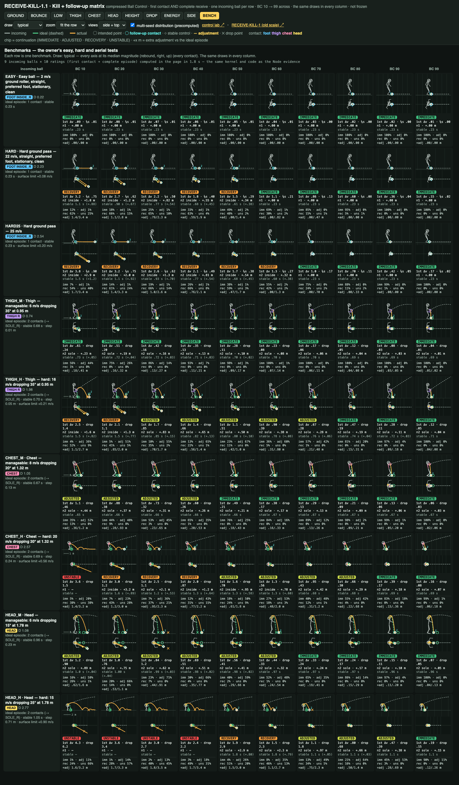
GROUND
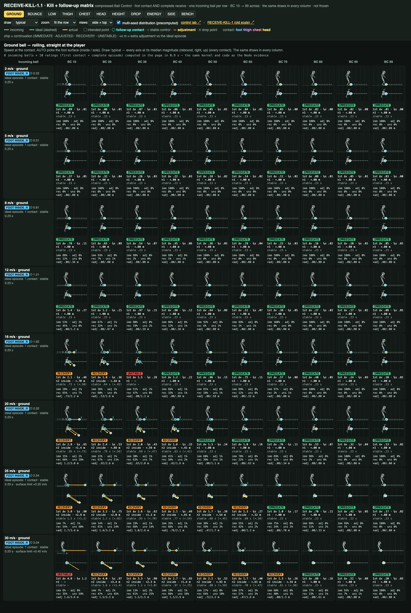
BOUNCE
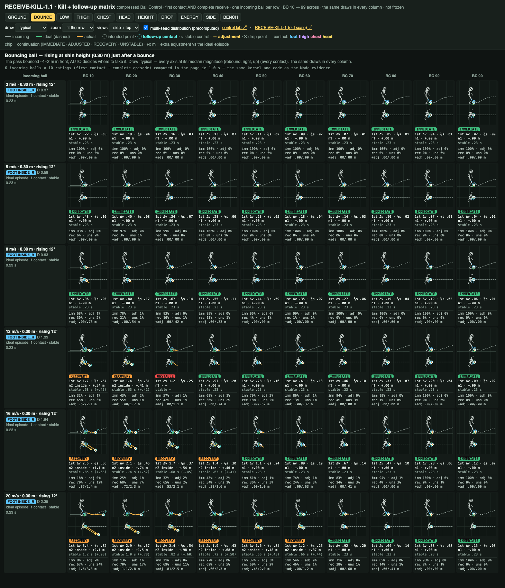
LOW
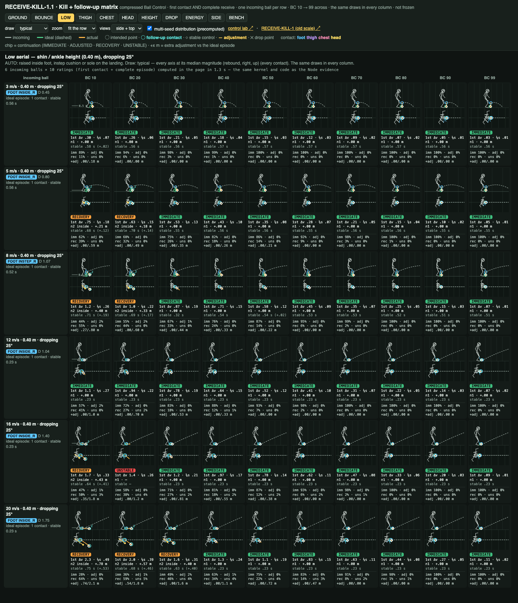
THIGH
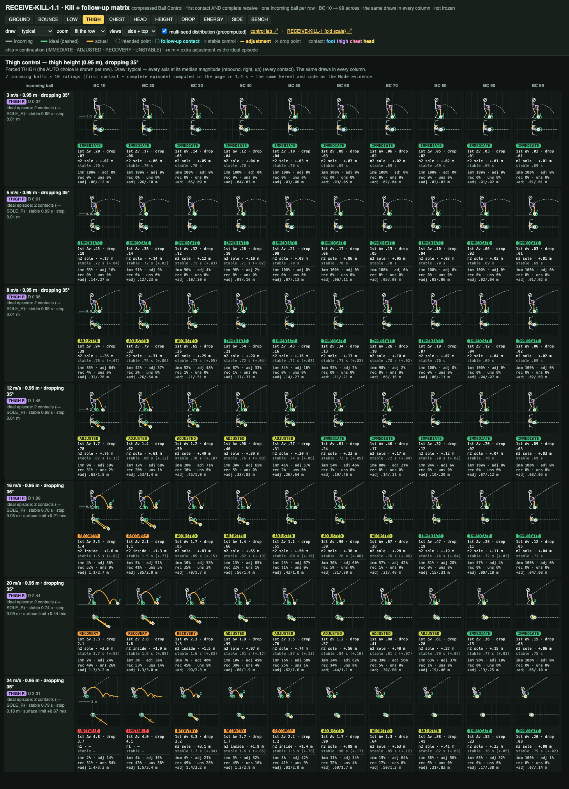
CHEST
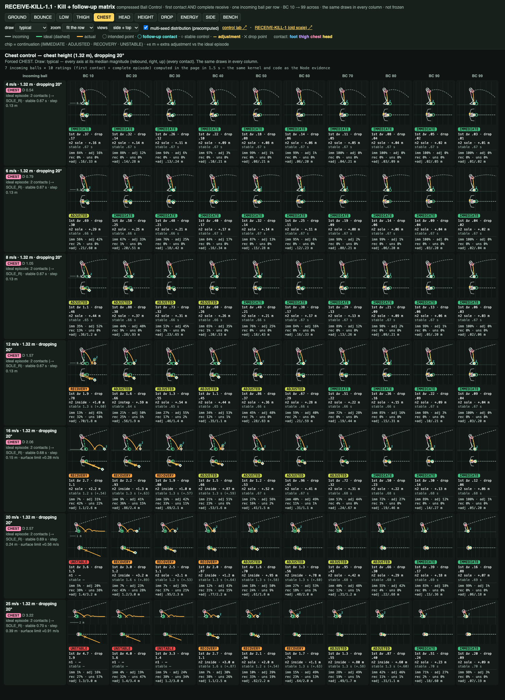
HEAD
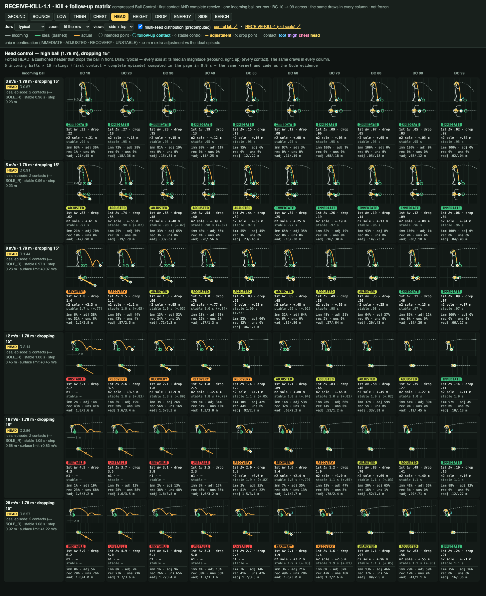
HEIGHT
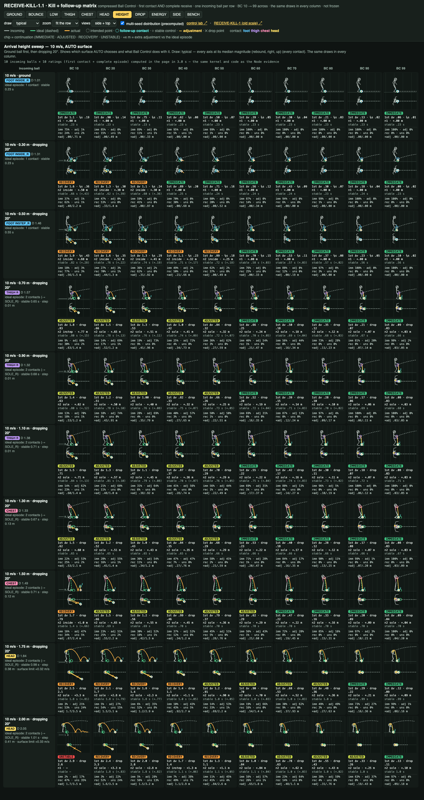
DROP
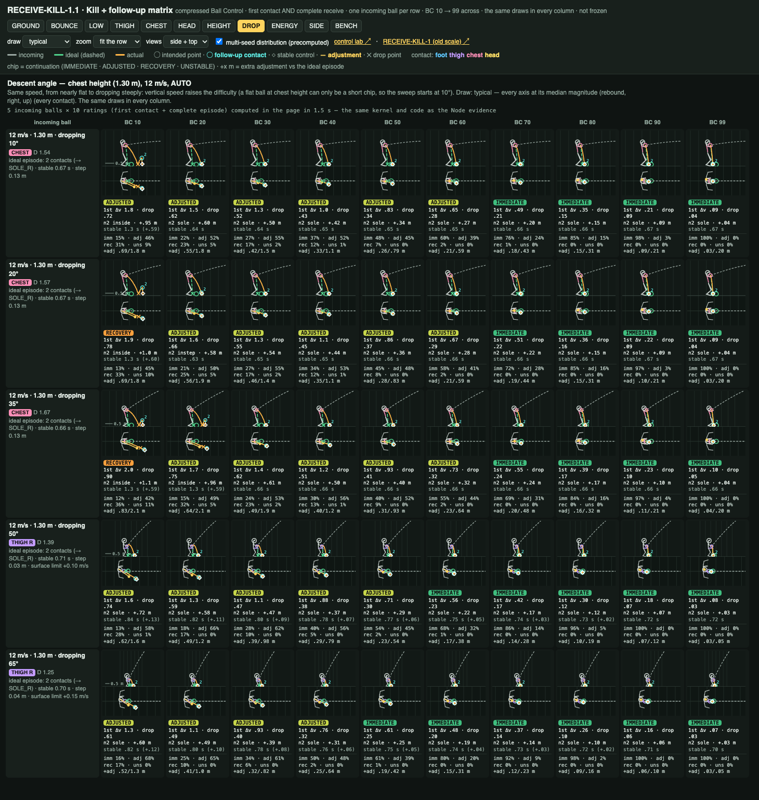
ENERGY
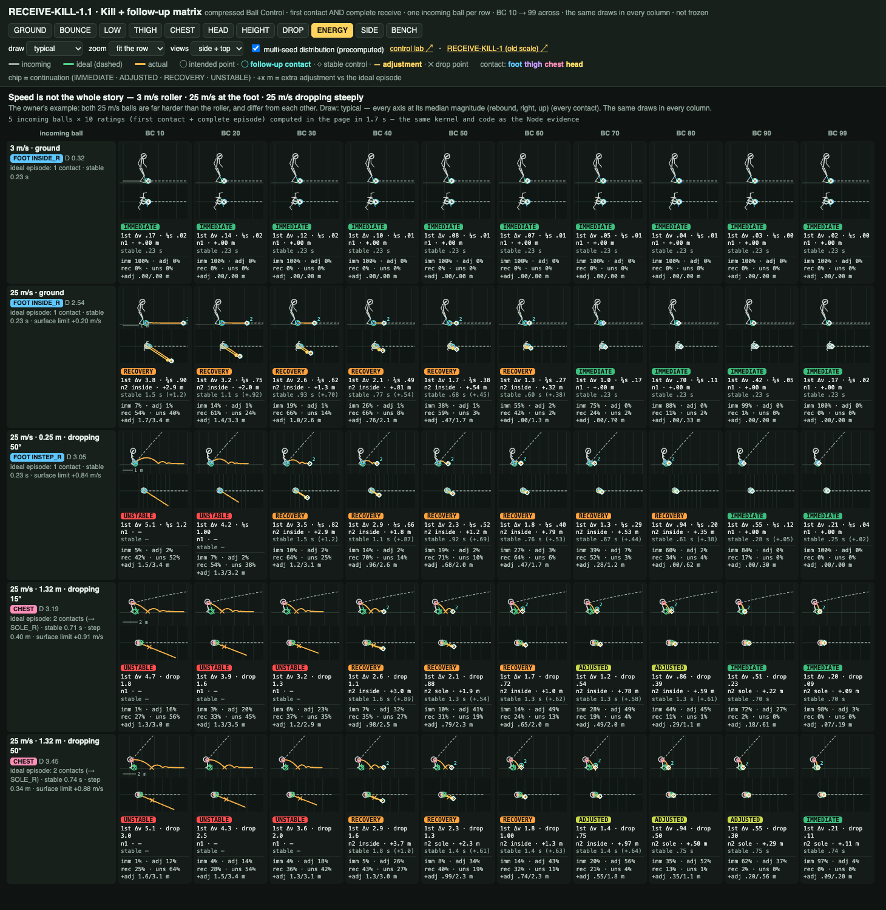
SIDE
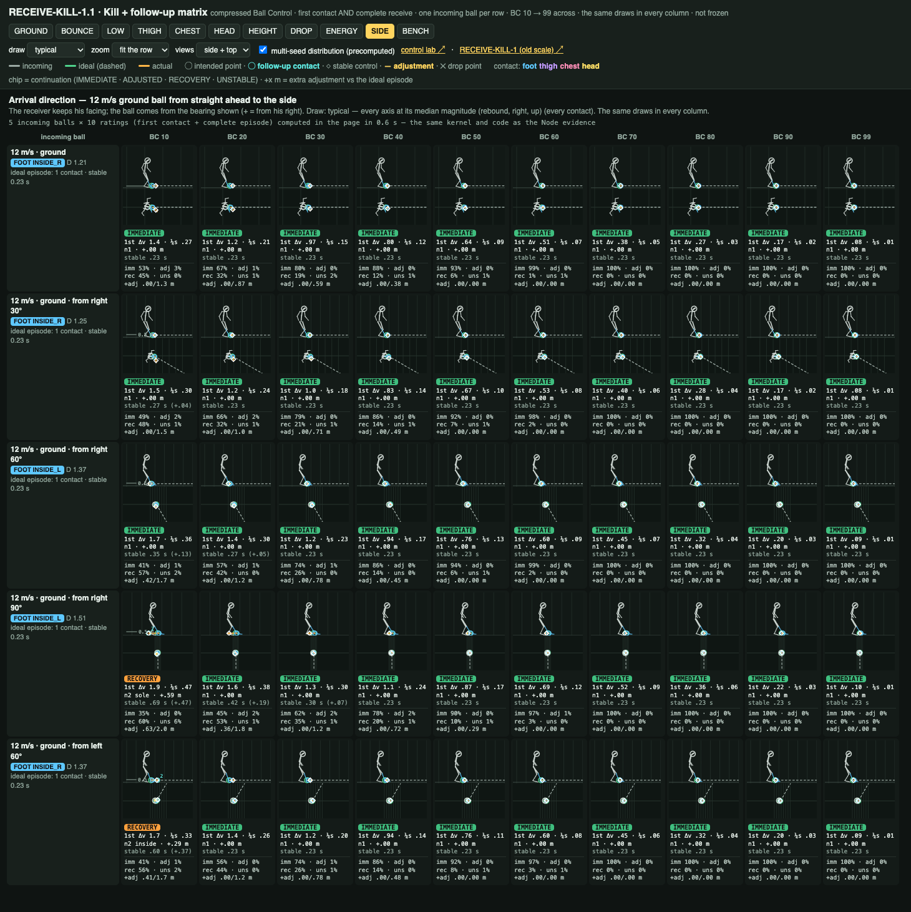
5 · Definitions
| Stable control | ball centre ≤ 0.21 m and |vz| ≤ 0.8 m/s · speed ≤ 0.8 m/s · in the usable zone (forward -0.2 … 0.7 m, side ≤ 0.55 m, ≤ 0.72 m) · the player settled · held 0.1 s — a diagnostic, never a possession switch |
| IMMEDIATE | natural contacts (foot 1, aerial 2), extra adjustment ≤ 0.25 m, ≤ 0.25 s later than the ideal episode |
| ADJUSTED | natural contacts, extra adjustment ≤ 1 m |
| RECOVERY | an extra touch or extra adjustment > 1 m |
| UNSTABLE | no stable control within reach (4 m) — a loose, contestable ball |
6 · Verification
| Matched draws | every contact's draws identical across BC 10 … 99: 151/151; first-contact error = the same vector × E: 829/829 (max deviation 4.8e-15; 11 capped) |
| Replay · seeds | 252/252 · 70/70 |
| Authoritative path | a fresh world with every launch of the episode scheduled = the episode: 252/252 (387 contacts) |
| Animation on / off | 14/14 |
| Chrome = Node | 45/45 whole episodes bit-identical |
| Regression | DRIBBLE-V1 60/60 before / after 650 episodes, frozen evidence 48/48 · RECEIVE-CONTROL-1.1 cases 11/11, matrix of record 714/714 · RECEIVE-KILL-1 90/90 cells = its evidence · D1 / RX / RXE unchanged true · frozen files IDENTICAL (93) |
CPU (ms, Node, one process, alone)
| first surface | first contact | follow-ups / episode | follow-up prediction | follow-up plan | follow-up contact | whole episode | worst | free-ball physics |
|---|---|---|---|---|---|---|---|---|
| FOOT | 0.172 | 0.25 | 12.168 | 0.452 | 0.209 | 3.379 | 7.839 | 3.24 |
| THIGH | 0.148 | 0.94 | 4.784 | 0.334 | 0.187 | 5.158 | 5.813 | 3.08 |
| CHEST | 0.039 | 0.92 | 4.819 | 0.326 | 0.193 | 4.932 | 5.471 | 3.08 |
| HEAD | 0.050 | 0.72 | 5.227 | 0.357 | 0.189 | 4.219 | 5.214 | 2.96 |
7 · Limitations
- Placeholder body (not in the ball's world; a loose ball passes through the legs); the follow-up's blend is procedural.
- Stationary receiver, clean conditions; the adjustment is a fixed 3 m/s shuffle (Agility later); no opponent: an UNSTABLE ball is "loose", not "lost to someone".
- The forced HEAD at 15 m/s remains the hardest case (AUTO would chest it); hard aerial balls at low ratings still produce loose balls.
- Constants not locked: the curve (eSkill 0.25, λ 0.68), the surface error shapes, the follow-up timing and the stable / continuation thresholds.